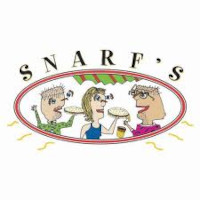

Resume
Below is my resume. I have pulled out some parts of it that I am exceptionaly proud of.
Full Screen
Highlights from my Resume
Northrop Grumman Detection and Prediction
View repository- Used Unity to simulate a controlled test environment
- Created an AI to predict the path of a car in a city to then intercept
- Created tracking software to identify specific vehicles in a controlled environment
Shift Manager - Snarf's
- Reduce labor costs on a day-to-day basis.
- Understand customer needs when issues arise.
- Assemble sandwiches/salads while following recipes and adhering to Snarf’s standards.
- Become Serve-Safe Certified in best practices for hygiene in Food handling
- Serve safe certification